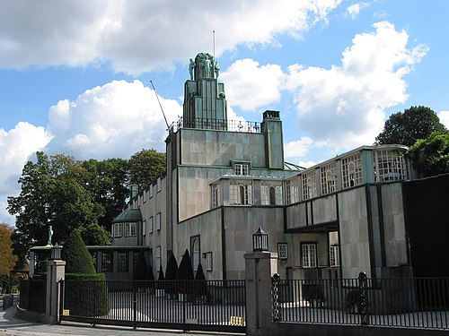

Stoclet Palace
벨기에의 금융인 겸 미술 작품 수집가인 아돌프 스토클레
(Adolphe Stoclet, 1871년 ~ 1949년)의 사저로 사용되었으며 1905년부터 1911년까지 건설되었다.
오스트리아의 건축가인 요제프 호프만이 설계를 맡았고 구스타프 클림트 등이 저택의 내부를 맡았다.
20세기 초반에 발달한 내장재, 외장재, 가구, 일용품, 정원이 결합된 종합 예술 양식을
띤 건축물이며 벨기에의 아르 데코 시대를 대표하는 건축물로 여겨진다.
